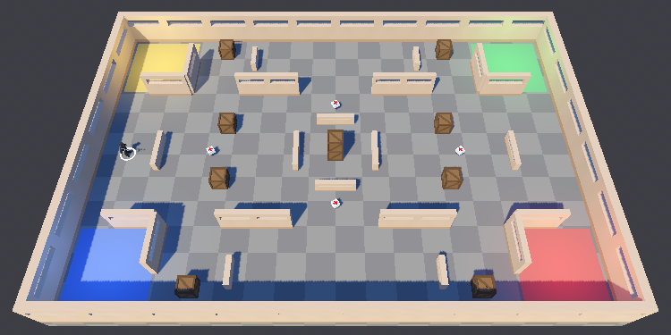
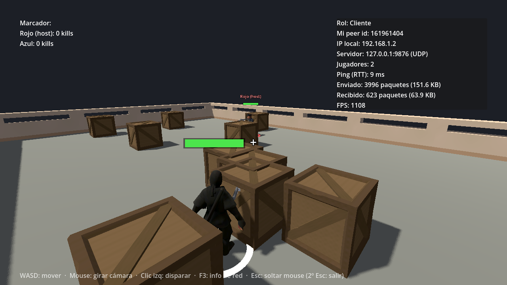

Qué hicimos, cómo funciona y cómo contarlo en la sustentación. Es un apoyo para hablar, no un informe: la idea es entenderlo y explicarlo con nuestras palabras.

Hicimos un juego de disparos en 3D para varios jugadores, y lo usamos para mostrar cómo funciona una red de verdad. Un computador crea la partida y hace de servidor. Los demás jugadores están en otra red local y, para llegar al servidor, sus paquetes tienen que pasar por dos routers unidos por un enlace WAN.
El proyecto tiene tres partes que se apoyan entre sí:
“Nuestro proyecto es un juego multijugador, pero lo importante es la red que hay debajo. El servidor está en una red local, los jugadores están en otra, y en el medio hay dos routers conectados por una WAN. Todo lo que pasa en el juego viaja por ese camino.”
Un router conoce solo las redes que tiene conectadas. El Router A sabe llegar a la LAN A y al enlace WAN, pero no sabe dónde está la LAN B. Para eso le pusimos una ruta estática: “para llegar a la LAN B, mándalo al Router B”. El Router B tiene la ruta inversa. Con dos routers no hace falta un protocolo de enrutamiento: dos rutas escritas a mano lo resuelven.
No usamos NAT: los jugadores se conectan directo a la dirección real del servidor, y el camino queda más fácil de entender y de verificar.
“Cuando un jugador dispara, su paquete sale de su PC, pasa por el switch de su red, llega a su router, cruza la WAN, entra al otro router, pasa por el otro switch y llega al servidor. La respuesta hace el mismo camino al revés.”
Packet Tracer no ejecuta el juego. Lo que demuestra es que el camino existe: si hay conectividad IP entre los jugadores y el servidor, el juego funciona sobre esa red.
No hay un servidor aparte: el PC que crea la partida es el servidor y además juega. Los demás son clientes. Los clientes nunca hablan entre ellos: todo pasa por el servidor, que le cuenta a cada uno lo que está pasando.
El cliente no dice dónde está: dice lo que quiere hacer (moverse hacia allá, apuntar acá, disparar). El servidor hace la cuenta y decide dónde queda cada uno, si una bala pegó y cuánta vida le queda a cada quien. Además revisa que cada mensaje venga del dueño de ese jugador y recorta valores que no tengan sentido.
Dos razones: todos ven lo mismo, porque hay una sola versión de la partida, y nadie puede hacer trampa mandando “estoy en otro lado” o “tengo toda la vida”.
El juego usa UDP, no TCP. En un juego, un dato viejo ya no sirve: si se pierde una posición, no vale la pena esperar a que se reenvíe, porque ya viene la siguiente. TCP se quedaría esperando y todo se atrasaría.
Pero hay mensajes que sí tienen que llegar, como “fulano eliminó a mengano” o “la partida terminó”. Para eso usamos ENet, que va sobre UDP y nos deja elegir mensaje por mensaje:
| Qué viaja | Cómo | Por qué |
|---|---|---|
| Lo que el jugador quiere hacer (teclas, mira) | rápido, sin garantía | Se repite todo el tiempo; si uno se pierde, llega el siguiente. |
| Posición de cada jugador | rápido, sin garantía | Igual: siempre hay una más nueva en camino. |
| Vida, munición, si murió | seguro | Solo se manda cuando cambia, y tiene que llegar. |
| Aparición de jugadores y balas | seguro | Si se pierde, ese jugador no vería a alguien. |
| Nombre al conectarse, estado de la partida, marcador, eliminaciones, botiquines | seguro | Pasan una vez; perderlos dejaría a alguien desfasado. |
| Aviso de “le pegaste” | seguro | Va solo al que disparó, no a todos. |
Es un juego de disparos en tercera persona, en 3D, hecho en Godot con GDScript, para hasta ocho jugadores. No buscamos un juegazo: queríamos algo divertido y completo para que la parte de red tuviera algo real que mover.
Es el de la portada. Es simétrico, para que nadie aparezca con ventaja: un centro abierto, pasillos a los lados, un cuarto de color en cada esquina (rojo, azul, verde y amarillo) para orientarse, y botiquines en puntos fijos.
“Cada cosa que ven en pantalla tiene una decisión de red detrás. La vida viaja segura porque no se puede perder; la posición viaja rápida porque se renueva sola; y los efectos no viajan, cada equipo los dibuja por su cuenta.”

Con F3 se abre un panel que muestra el rol del equipo (servidor o cliente), su IP, a qué servidor está conectado, cuántos jugadores hay, la latencia (cuánto tarda un mensaje en ir y volver) y cuántos paquetes se han enviado y recibido. Es la forma de “ver” la red desde adentro del juego.
En un cliente, con el panel abierto, F4 agrega retraso y F5 hace que se pierdan paquetes a propósito. Solo afecta a lo que viaja rápido y sin garantía (las teclas y las posiciones). Lo seguro no se toca, porque ENet lo reenviaría igual.
Así se puede mostrar en vivo qué pasaría con una WAN mala sin tener que dañar la red real:
“Si le metemos retraso, el muñeco tarda en moverse, porque mi PC le manda la tecla al servidor, el servidor lo mueve y me devuelve la posición. Si le metemos pérdida, se mueve un poco menos fino, pero no se rompe: por eso elegimos UDP y separamos lo urgente de lo importante.”
Sirve tanto con los routers reales como con dos instancias en un mismo PC.
Porque en un juego importa lo más reciente. TCP reenvía lo que se pierde y no entrega lo nuevo hasta recuperar lo viejo, y eso causa tirones. Con UDP, si se pierde una posición, llega la siguiente. Lo que sí debe llegar lo mandamos en modo seguro con ENet.
Depende del tipo. Si era una posición o una tecla, no pasa nada: llega la siguiente enseguida. Si era algo importante, como una eliminación, ENet lo vuelve a mandar hasta que llega. Lo podemos mostrar con el simulador.
Para que haya una sola versión de la partida y todos vean lo mismo, y para evitar trampas. El cliente solo dice qué quiere hacer; no puede decir “estoy aquí” ni “no me pegaron”.
Cada router solo conoce las redes que tiene conectadas; la ruta estática le dice cómo llegar a la LAN del otro lado. Con dos routers y una sola ruta posible, escribirla a mano es lo más simple. Con una red grande o con caminos alternos sí convendría algo como OSPF.
Porque en ese enlace solo hay dos equipos, los dos routers. Una /30 da exactamente dos direcciones útiles, así no se desperdician direcciones.
Porque toda la red es nuestra y privada: los clientes pueden llegar directo a la IP del servidor. Sin NAT el camino es más claro y se puede seguir con ping y tracert. Si el juego fuera por internet, sí habría NAT y habría que abrir el puerto en el router del servidor.
Por el TTL: cada router le resta uno, y llega con dos menos. Y con tracert se ven los saltos uno por uno.
Porque es cliente-servidor: el servidor tiene la verdad y le cuenta a cada uno. Así cada cliente solo necesita saber la IP del servidor y no las de todos los demás.
Se acaba la partida: los clientes vuelven al menú con un aviso. Es la desventaja de que el servidor sea uno de los jugadores; un servidor dedicado lo evitaría, pero para el proyecto preferimos mantenerlo simple.
Por la interpolación: el cliente no salta a cada posición nueva, sino que lleva al jugador suavemente hacia ella.
No. Está en el código y cada equipo lo construye igual. Lo mismo con los efectos visuales: no gastan red.
Una sugerencia para que cada uno tenga su parte clara. Conviene que todos sepamos contestar las preguntas de la sección anterior.
| Parte | Qué cuenta | Apoyo |
|---|---|---|
| 1 · La red | La topología, las direcciones, la /30, las rutas estáticas, por qué no NAT. | Diagrama de la sección 2 y Packet Tracer con ping y tracert. |
| 2 · La comunicación | Cliente-servidor, el servidor manda, UDP y ENet, rápido contra seguro, ritmo fijo, interpolación. | Diagrama y tabla de la sección 3. |
| 3 · La demo | El juego funcionando, el panel F3 y el simulador de mala red. | Guion de la sección 6. |
“Logramos que un juego en tiempo real funcione entre dos redes distintas unidas por una WAN. La red lo hace posible con dos rutas estáticas, y el juego lo aprovecha bien: el servidor decide, lo urgente viaja rápido y lo importante viaja seguro. Y con el simulador mostramos que aguanta aunque la red no sea buena.”